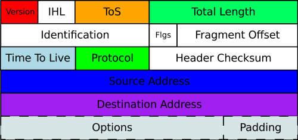
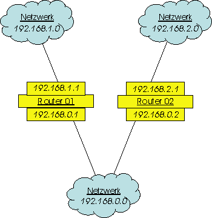
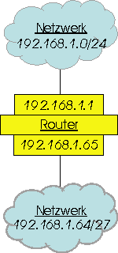

Das IP-Protokoll (internet protocol) - es wird gelegentlich auch als das Hauptprotokoll von TCP/IP bezeichnet - liegt auf dem OSI-Layer 3 (internet) und ist ein verbindungsloses Protokoll. Das bedeutet, dass keine Verbindung zum Zielknoten aufgebaut wird, sondern die Pakete einfach dem Netz übergeben werden und dort ihren Weg quasi selbst finden. Es wird nicht überprüft, ob der Zielrechner überhaupt erreichbar ist und innerhalb des IP-Protokolls auch nicht gewährleistet, dass die Datenpakete tatsächlich beim Empfänger ankommen. Zusätzlich gibt es noch die Möglichkeit, Datagramme in kleinere Blöcke zu fragmentieren und getrennt weiterzuleiten, falls in einem Teilnetz eine MTU (Maximum Transmisson Unit) (=Längenbeschränkung) vorgegeben ist. In diesem Fall werden die IP-Header im Wesentlichen repliziert und vor die Datenfragmente gesetzt. Umgekehrt ist es auch möglich, kleinere Teildatagramme zu einem größeren zu reassemblieren.
Der IP-Header hat folgenden Aufbau:

(aus: https://commons.wikimedia.org)
Legende:
Besondere Beachtung verdient die IP-Adresse, wobei hier die immer noch gängige Version IPv4 ausführlich behandelt werden soll.
IP-Adresse (IPv4)
Zur Adressierung der Netzknoten, die innerhalb der TCP/IP-Familie auch Hosts
heißen, werden Adressen verwendet, die jeweils aus einer 32 Bit langen
Binärzahl bestehen. Diese wird der bessern Lesbarkeit halber in Form von
vier, durch Punkte getrennten, Bytes dezimal dargestellt.
| 193.170.8.138 |
| 11000001.10101010.00001000.10001010 |
Weiters sind bei IP-Adressen zwei Teile zu unterscheiden, deren
Längen variabel sind, die Netzwerkadresse
(Net-ID) und die Hostadresse (Host-ID). Man teilt
Netzwerke wie folgt ein:
|
|
31
|
30
|
29
|
28
|
27
|
24
|
16
|
8
|
0
|
| Klasse A | 0 | Net-ID | Host-ID | ||||||
| Klasse B | 1 | 0 | Net-ID | Host-ID | |||||
| Klasse C | 1 | 1 | 0 | Net-ID | Host-ID | ||||
| Klasse D | 1 | 1 | 1 | 0 | Multicast Adresse (28 Bit) | ||||
| Klasse E | 1 | 1 | 1 | 1 | 0 | Reserviert | |||
Die Netzklassen haben damit folgende leicht überprüfbare
Eigenschaften:
| Klasse A | Klasse B | Klasse C | |
| Klassen-ID | 0 | 10 | 110 |
| Netz-ID | 8 Bit | 16 Bit | 24 Bit |
| Host-ID | 24 Bit | 16 Bit | 8 Bit |
| Netzmaske | 255.0.0.0 | 255.255.0.0 | 255.255.255.0 |
| Wertebereich (theoretisch) |
0.0.0.0 127.255.255.255 |
128.0.0.0 191.255.255.255 |
192.0.0.0 223.255.255.255 |
| Anzahl der Netze | 27=128 | 26*256 =16384 | 25*256*256=2097152 |
| Anzahl der Hosts | 2563=16777216 | 2562=65536 | 2561=256 |
Die Klassen D und E sind besondere Netzklassen. Die Identifikation für
die Adressen der Klasse D ist die Bitkombination 1110. Der Adressbereich geht
von 224.0.0.0 bis 239.255.255.255. Durch den 28 Bit langen Identifikator für
die Multicast-Gruppen, ist die Bildung von bis zu 268 435 456 Gruppen möglich.
Kennzeichnung der Klasse E ist die Bitkombination »11110« in den
fünf Bits höchster Ordnung. Bei den Adressen der Klasse E handelt
es sich um reservierte Adressen für zukünftige Anwendungen. Der Adressbereich
reicht von 240.0.0.0 bis 247.255.255.255.
Die Netzmaske hat den gleichen
Aufbau wie eine IP-Adresse und hat die Aufgabe, Netzwerkadresse und Hostadresse
zu trennen. In der Binärdarstellung erhält man die Netzmaske, indem
man die Netz-ID auf 1 und die Host-ID auf 0 setzt. In unserem einleitenden Beispiel,
das die IP-Adresse eines TGM-Servers zeigt, stellen wir fest, dass die Adresse
zu einem Klasse-C-Netz gehört und fügen die passende Netzmaske hinzu.
Wir wenden nun auf IP-Adresse und Netzmaske eine bitweise AND-Verknüpfung
an, die bekanntlich folgende Rechenregeln kennt:
| A | 0 | 0 | 1 | 1 |
| B | 0 | 1 | 0 | 1 |
| A AND B | 0 | 0 | 0 | 1 |
Die Verknüpfung liefert 1, falls beide Summanden 1 sind, sonst 0, was auch im [fasch,wahr]-Modell nachvollziehbar ist.
| Dezimal | Binär | |
| IP-Adresse | 193.170.8.138 | 11000001.10101010.00001000.10001010 |
| Netzmaske | 255.255.255.0 | 11111111.11111111.11111111.00000000 |
| IP AND Mask | 193.170.8.0 | 11000001.10101010.00001000.00000000 |
| Broadcast | 193.170.8.255 | 11000001.10101010.00001000.11111111 |
Die AND-Verknüpfung liefert eine Adresse, die aus der Netz-ID und dem Wert
0 im letzten Byte zusammengesetzt ist, die Netzwerkadresse.
Es gilt:
Neben der Netzwerkadresse, die natürlich
keinem Host zugewiesen werden darf, ist auch noch die zum Netzwerk gehörige
Broadcastadresse reserviert, die im Bereich der Host-ID acht mal die 1, also
den Dezimalwert 255 enthält. Damit sollte klar sein, dass in einem Klasse-C-Netz
lediglich 254 Hosts mit den Adressen X.X.X.1
- X.X.X.254 adressierbar sind und Analoges gilt für
die anderen Netzklassen.
Daneben treten speziell in Routingtabellen ungültige
IP-Adressen auf, die ebenfalls nicht vergeben werden dürfen. Sie
haben folgende Bedeutung, wobei das Beispiel für ein Klasse-B-Netz gilt:
| 0.0.0.0 | beliebiger Host mit Netzwerk und Host-ID |
| 0.0.x.x | Host in beliebigem Netz |
| 255.255.255.255 | Broadcast im lokalen Netz |
| x.x.255.255 | Broadcast im angegebenen Netz |
| 127.0.0.0 | Loopbackadresse für Testzwecke |
| 127.0.0.1 | Host bei Loopback |
Wir sind damit in der Lage, eine Routingtabelle zu analysieren. Wir betrachten dazu noch einmal die drei Netze aus dem Kapitel über Router samt der nun etwas komplexeren Routingtabelle auf Router 01, die natürlich als Beispiel aufzufassen ist:
|

|
|
||||||||||||||||||||||||||||||||||||||||
Die ersten beiden Zeilen routen Datagramme in die entsprechenden Netzwerke über
die geeigneten Schnittstellen bzw. Gateways, Zeile 3 routet ins Netzwerk 192.168.2.0,
Zeile 4 setzt eine Defaultroute in der Annahme, dass es im Netzwerk
192.168.2.0 noch weitere Router gibt, Zeile 5 routet Broadcasts, Zeile
6 schickt Loop-Backs an den Router selbst.
Routingtabellen können noch wesentlich komplizierter aussehen, vor allem dann, wenn Subnetze zu bedienen sind oder Mehrfachwege zu anderen Routern programmiert sind. Die Erstellung der Tabellen erfolgt natürlich in der Regel softwareunterstützt, ihre Wartung wird zum Teil von eigenen Protokollen wie RIP, IGRP, OSPF oder NLSP bewerkstelligt, wobei Teile von Routingtabellen von einem Router zum anderen übertragen oder Algorithmen zur Wegzeitverkürzung angewendet werden.
Grundsätzlich ist die Vergabe der Netz-ID in einem LAN völlig frei, jedenfalls solange sichergestellt ist, dass das Netz nicht mit größeren Netzwerken wie etwa dem Internet verbunden wird. Im Internet dürfen IP-Adressen - mit Ausnahmen - weltweit nur einmal vergeben werden, damit die Datagramme richtig zugestellt werden können. Eine statische oder dynamische IP-Adresse muss dann beantragt werden. Verfügungsgewalt über die IP-Adressen hat die in den USA ansässige IANA (Internet Assigned Numbers Authority). Die Mieter solcher IP-Adressen sind öffentlich, sie können in der Whois-DB der RIPE NCC (Réseaux IP Européens Network Coordination Centre) abgefragt werden, die die Europa zugeteilten IP-Adressen verwaltet. In der Praxis erhält ein Host seine IP-Adresse vom zuständigen Provider, sie ist das, was im Volksmund Internetzugang heißt.
Damit Netzwerke mit TCP/IP betrieben werden können ohne IP-Adressen
zu mieten, wurden einige IP-Ranges freigegeben. Diese Adressen werden im Internet
nicht geroutet und dürfen von jedermann kostenfrei verwendet werden.
| Netzklasse | Anzahl | IP-Range |
| A | 1 | 10.x.x.x |
| B | 16 | 172.16.x.x - 172.31.x.x |
| C | 256 | 192.168.x.x |
Die IANA hat auch das Klasse-B-Netz 169.254.0.0
für private Netze reserviert. Es wird von Applehosts mit dem Protokoll
Rendevouz und von Microsofthosts mit dem Protokoll APIPA (Automatic Private IP Addressing) verwendet und teilt jedem Host automatisch
eine IP-Adresse aus diesem Adressraum zu, falls ein DHCP-Server nicht erreichbar
ist.
Trotz ihrer scheinbar großen Anzahl, reichen die zur Verfügung stehenden
IP-Adressen schon lange nicht mehr aus. Abhilfe schaffen drei Maßnahmen:
Subnetze
dienen dazu, innerhalb der schon definierten Netzklassen durch Router getrennte Teilnetze zu bilden. Dadurch wird eine Strukturierung von Netzwerken innerhalb einer Netzklasse ermöglicht. Bei der Konstruktion ist sicherzustellen, dass die beteiligten Router Host-ID und Teilnetz-ID trennen können. Das geschieht durch Setzen einer sogenannten Subnetzmaske, die die IP-Adresse auch innerhalb der Bytes trennt, ansonsten aber gleich operiert.
Es ergeben sich für das zweite, dritte und vierte Byte:
| Subnetzmaske (pro Byte) | Hostanteil | Anzahl | |||||||
| 128 | 1 | 7 Bit | 126 | ||||||
| 192 | 1 | 1 | 6 Bit | 62 | |||||
| 224 | 1 | 1 | 1 | 5 Bit | 30 | ||||
| 240 | 1 | 1 | 1 | 1 | 4 Bit | 14 | |||
| 248 | 1 | 1 | 1 | 1 | 1 | 3 Bit | 6 | ||
| 252 | 1 | 1 | 1 | 1 | 1 | 1 | 2 Bit | 2 | |
Die Spalte Hostanteil zeigt, wieviele - hier auf 1 gesetzte - Bits des Maskierbytes durch die in der linken Spalte stehende Subnetzmaske auf die Netz-ID entfallen. Wird also zum Beispiel in einem Klasse-B-Netz eine Subnetzmaske 255.255.224.0 gesetzt, so verbleibt im dritten Byte ein Hostanteil von 5 Bit (Zeile 3). Weil die Randadressen für Netzwerkadresse und Broadcastadresse reserviert sind, können im dritten Byte 30 Adressen vergeben werden, die natürlich mit allen zulässigen Adressen des vierten Bytes kombiniert werden dürfen. Es wären also 30*254 Hosts adressierbar.
Zum besseren Verständnis der Tabelle dient:
Wir zeigen im Folgenden Subnetting an einem einfachen Beispiel:
Das Netzwerk der Klasse C 192.168.1.0 soll in Subnetze aufgeteilt werden, in denen jeweils 30 Hosts adressierbar sind.
| Maskierbyte | Subnetz-ID | |||||||
| 0 | 0 | 0 | 0 | 0 | 0 | 0 | 0 | 192.168.1.0 |
| 0 | 0 | 1 | 0 | 0 | 0 | 0 | 0 | 192.168.1.32 |
| 0 | 1 | 0 | 0 | 0 | 0 | 0 | 0 | 192.168.1.64 |
| 0 | 1 | 1 | 0 | 0 | 0 | 0 | 0 | 192.168.1.96 |
| 1 | 0 | 0 | 0 | 0 | 0 | 0 | 0 | 192.168.1.128 |
| 1 | 0 | 1 | 0 | 0 | 0 | 0 | 0 | 192.168.1.160 |
| 1 | 1 | 0 | 0 | 0 | 0 | 0 | 0 | 192.168.1.192 |
| 1 | 1 | 1 | 0 | 0 | 0 | 0 | 0 | 192.168.1.224 |
| Maskierbyte | Broadcast | |||||||
| 0 | 0 | 0 | 1 | 1 | 1 | 1 | 1 | 192.168.1.31 |
| 0 | 0 | 1 | 1 | 1 | 1 | 1 | 1 | 192.168.1.63 |
| 0 | 1 | 0 | 1 | 1 | 1 | 1 | 1 | 192.168.1.95 |
| 0 | 1 | 1 | 1 | 1 | 1 | 1 | 1 | 192.168.1.127 |
| 1 | 0 | 0 | 1 | 1 | 1 | 1 | 1 | 192.168.1.159 |
| 1 | 0 | 1 | 1 | 1 | 1 | 1 | 1 | 192.168.1.191 |
| 1 | 1 | 0 | 1 | 1 | 1 | 1 | 1 | 192.168.1.223 |
| 1 | 1 | 1 | 1 | 1 | 1 | 1 | 1 | 192.168.1.255 |
| Maskierbyte | Bereichsanfang | |||||||
| 0 | 0 | 0 | 0 | 0 | 0 | 0 | 1 | 192.168.1.1 |
| 0 | 0 | 1 | 0 | 0 | 0 | 0 | 1 | 192.168.1.33 |
| 0 | 1 | 0 | 0 | 0 | 0 | 0 | 1 | 192.168.1.65 |
| 0 | 1 | 1 | 0 | 0 | 0 | 0 | 1 | 192.168.1.97 |
| 1 | 0 | 0 | 0 | 0 | 0 | 0 | 1 | 192.168.1.129 |
| 1 | 0 | 1 | 0 | 0 | 0 | 0 | 1 | 192.168.1.161 |
| 1 | 1 | 0 | 0 | 0 | 0 | 0 | 1 | 192.168.1.193 |
| 1 | 1 | 1 | 0 | 0 | 0 | 0 | 1 | 192.168.1.225 |
| Maskierbyte | Bereichsende | |||||||
| 0 | 0 | 0 | 1 | 1 | 1 | 1 | 0 | 192.168.1.30 |
| 0 | 0 | 1 | 1 | 1 | 1 | 1 | 0 | 192.168.1.62 |
| 0 | 1 | 0 | 1 | 1 | 1 | 1 | 0 | 192.168.1.94 |
| 0 | 1 | 1 | 1 | 1 | 1 | 1 | 0 | 192.168.1.126 |
| 1 | 0 | 0 | 1 | 1 | 1 | 1 | 0 | 192.168.1.158 |
| 1 | 0 | 1 | 1 | 1 | 1 | 1 | 0 | 192.168.1.190 |
| 1 | 1 | 0 | 1 | 1 | 1 | 1 | 0 | 192.168.1.222 |
| 1 | 1 | 1 | 1 | 1 | 1 | 1 | 0 | 192.168.1.254 |
Damit sind die Vorbereitungen getroffen. Es sei noch erwähnt, dass speziell Internet Service Provider Verfahren zur Verfügung haben, die auch die problematischen Randbereiche ohne Konflikt mit den übergeordneten Netzklassen routen (CIDR - classless internet domain routing).
Die tatsächliche Konfiguration des Subnetzes 192.168.1.64/27 (Zeile 3) als Subnetz von 192.168.1.0/24 (siehe obiges Beispiel) erfolgt nun in drei Schritten:
| IP-Adresse | 192.168.1.66 (-94) |
| Subnetzmaske | 255.255.255.224 |
| Gateway | 192.168.1.65 |
|  |
|
|||||||||||||||||||||
|
|
|